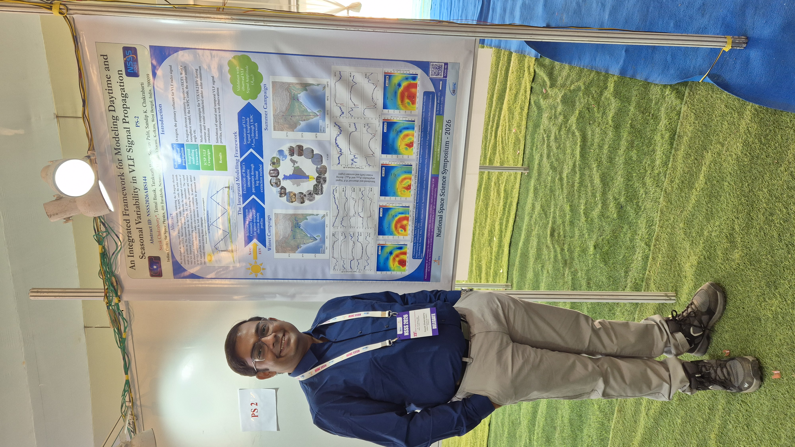

2026
23rd National Space Science Symposium (NSSS 2026)
Poster PresentationMy Contribution
“An Integrated Framework for Modeling Daytime and Seasonal Variability in VLF Signal Propagation”
I presented an integrated framework combining D-region electron continuity modelling, Wait’s ionospheric model and LWPC to simulate sub-ionospheric VLF signal propagation. The model was validated against multi-station VLF observations from ICSP and used to study the temporal and spatial behaviour of VLF signals during summer and winter conditions.
